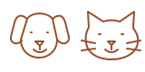

Assistente virtualConverse com o ANJOS IA
Pergunte sobre os animais disponíveis para adoção. O assistente consulta o catálogo público da ONG e responde apenas com os animais cadastrados. Ele não acessa dados pessoais e não registra interesse: para isso, abra o perfil do animal e use o botão “Manifestar interesse”.
O chat é fornecido pela plataforma Dify. Se ele não carregar, abra o ANJOS IA em uma nova aba.
Prefere ver por conta própria?
Consulte os perfis completos, com fotos e informações de convivência.
Consultar animais disponíveis